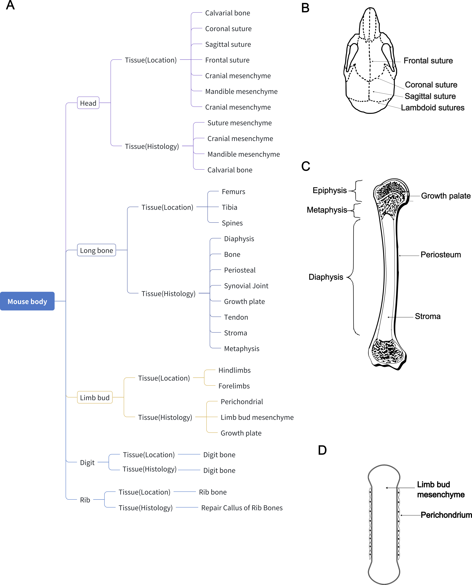
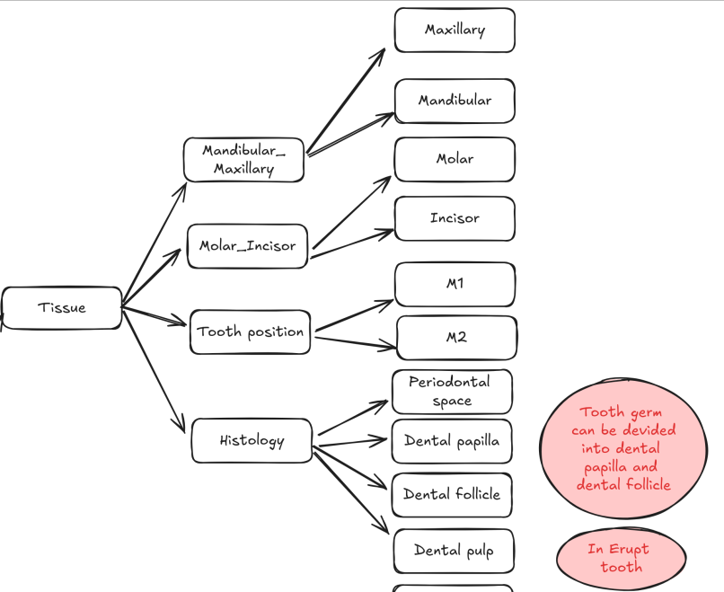
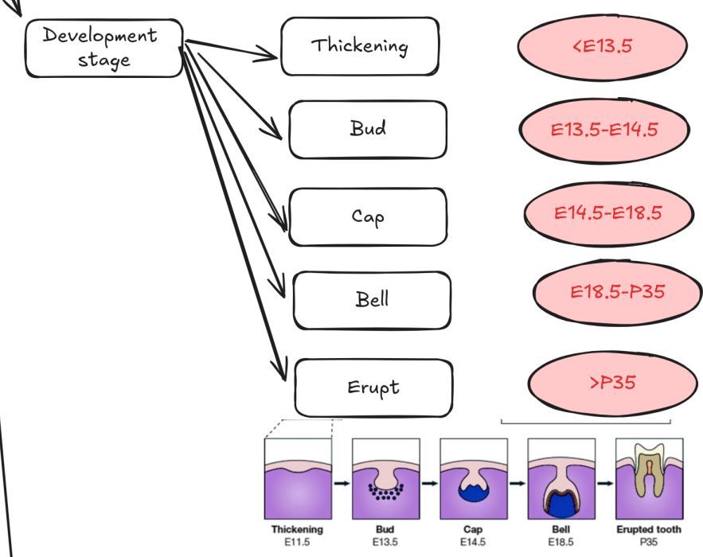
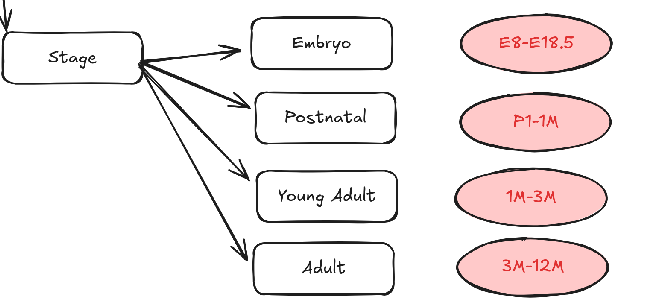

Metadata Collection¶
Introduction¶
When you’re working on large-scale single-cell datasets, you should manually collect metadata for each study. Here are some benefits:
It allows you to build a standard criterion to compare across studies.
It allows you to conveniently add study-level annotations to cell-level metadata.
It allows you to access the information you need quickly.
What metadata to collect?¶
While this is highly dependent on the study, here are some general categories of metadata that are often collected:
Study metadata:
Study name
Sample name
Data accession
Study publication journal
Study publication year
Biological covariates:
Tissue information
Age
Gene type
Treatment
Disease
Organism
Technical covariates:
Sequencing platform
Dissociation enzyme
In the following sections, we will go through an example of the metadata we collected in the tooth atlas.
Study metadata¶
Study name & Sample name¶
Usually, we define the study as one publication conducted by one lab. Samples in the same study are usually comparable. For example, the paper Spatiotemporal single-cell regulatory atlas reveals neural crest lineage diversification and cellular function during tooth morphogenesis [Jing et al., 2022] conducted by Yang Chai lab contains five samples ranging from E13.5 to PN7.5 in mouse embryo development. In my convention, I use characters “uniqueID+author” to name the study and use “uniqueID+sampleName” to name the sample. In this example, the study name is ToothNc_Junjun and the sample name is ToothNc_Junjun_E13.5. The most important thing is the study name should be easy to remember and unique.
Data accession¶
This is the accession number of the data. For example, the data of ToothNc_Junjun is GSE189381. Once you have recorded this information, you can easily access the data if you forget the data source.
Biological covariates¶
Tissue information¶
This is the most tricky part, and it is highly dependent on your purpose. For example, when I build the Differentiation Atlas focused on bone development, I found it’s hard to use one single tissue information to summarize the tissue information. So I use multi-level tissue information for description. Some reviews [Mizoguchi and Ono, 2021] suggest there are three main organs that generate the osteoblasts: Head, Limb bud, and Long bone, and the osteogenic pathways are significantly different across the organs. So I used tissue origin which contains these three categories to describe the main organ sources. And in a finer resolution, we can see that the organ can be divided into the histological and tissue location subtypes [Shu et al., 2021]. For example, the long bone can be divided into metaphysis, diaphysis, and epiphysis, which are histologically different. And it can also be divided into tibia, femur, which is location different. Therefore, I finally form three-level tissue metadata. 
And in tooth development, the situation is completely different. First, the tooth from mandibular or maxillary may have great shape and transcriptional differences [Faruangsaeng et al., 2022] [Pantalacci et al., 2017]. This is significant in mice, as the mandibular incisors of mice are longer than maxillary incisors.  Even more significant is the distinction between tooth types. The differences between molars and incisors extend beyond shape to include enamel structure. In incisors, the enamel exhibits a uniserial lamellar pattern of prisms in the inner enamel, while the outer enamel features parallel radial prisms. In contrast, molars display a multifaceted rod pattern with more variable structures than those found in incisors.[Seidel et al., 2017]
{kind=link}
Comparison of incisor and molar enamel structure. Figure adapted from [Seidel et al., 2017].¶
Some studies may focus on a specific tooth histology type. For example the study [Krivanek et al., 2020] use the dental pulp as the tissue source, while the study [Luo et al., 2024] focus on the tooth germ.
Age¶
Another important biological covariate is age. Based on the shape of tooth germ, we can roughly divide the tooth development into five stages: thicking, bud, cap, bell and erupted. [Tucker and Sharpe, 2004]  Studies also report the age-related difference in the dental pulp. [Wu et al., 2015] Therefore, we also collect the detailed age information for each sample and base on the age we divided into different stages. 